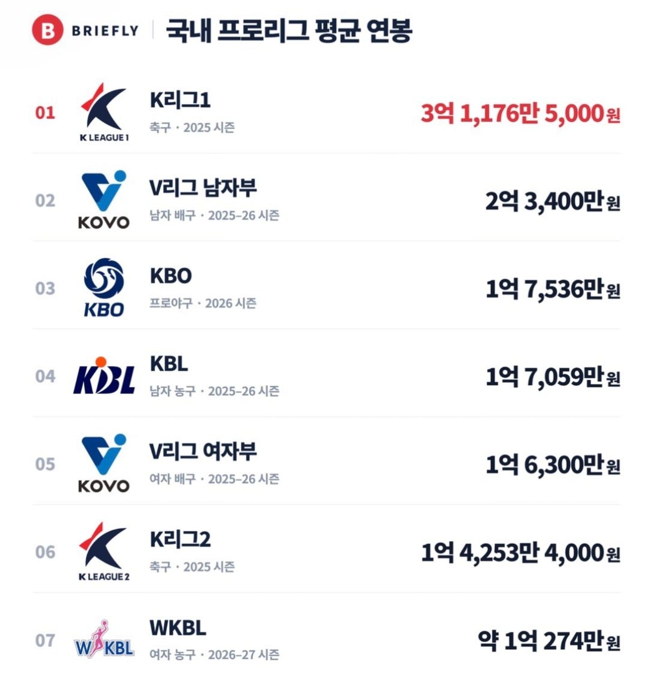

참고) 2부리그인 K2리그 평균 1.4억
K2리그 최다연봉자 세징야21억(시민구단 대구fc)
축구직 공무원들 든든허다~

참고) 2부리그인 K2리그 평균 1.4억
K2리그 최다연봉자 세징야21억(시민구단 대구fc)
축구직 공무원들 든든허다~
린가드보다 더받았고 2부로 강등 당하고도 21억으로 최다연봉자 등극 ㅋㅋ
세징야는 대구FC로 벌써 10년째(대구 소속 최장기 선수) 뛰고 있어서 이제 뺄 수도 없고 빼기도 힘든게 문제.
개리그 훌리건들이 그렇게나 좋아하는 영국 본토에서는 강등당하면 팀 에이스들부터 연봉삭감이나 방출로 재정 줄이는데 세징야는 뭐라고 최다연봉자 등극하나요?(진짜모름)
위 댓글에 썼자나 상징성 있는 선수에 잘하니까 잡을려면 돈 써야지.
다 알고 비꼬는거잖아. 세징야가 대구에 어떤선수인데.
심각하긴 하네 ㅠ
진짜 개 병신 세금 리그
잼버리도 그맇고, 섬박람회도 그렇고, 우리가 할 수 있는게 뭐임????
운동선수들 끼리 나온 유튜브 영상에서도 축구선수가 돈은 제일 많이 번다고 했던거 봤음
리그 수익률도 보여줬으면 ㅋㅋㅋ 수익 대비 세금이 얼마나 나가는가 ㅋㅋㅋ
기업구단으로 전환시키고 기업유치못한 시민구단은 해체시키자는 여론을 모아야할것같음
프로구단이 시민들도보지않는걸 세금 수십억 이상을 들여가며 유지할 명분이 도대체 뭐임
배구가 연봉이 높구나 ㄷㄷ
지금 시기에 여수 섬박람회, 여가부 예산, K리그 같은 병신들한테 세금 쳐박지 말고 잘 활용해서 미래 준비할 시기같은데 그냥 쌀먹대잔치임 ㅋㅋ 기사같은거로는 눈치도 안보는듯
저따구로차는데 3억이라고? ㅋㅋ
쌀먹파티
외인 용병 뺀 금액은 없나?
그 돈으로 스포츠센터나 더 지어라..
LCK도 궁금하다!
배구는 적어도 기업이지?
배구는 토쟁이 아저씨들이 든든하게 먹여살려줌
왜 토쟁이 아저씨들이 배구만 살려줘? 축구냐 야구는 토쟁이들이 싫어해?
축구는 승무패라 어렵고 야구는 1위팀도 승률6할이라 ㅈㄴ어렵대. 배구나 농구는 매년 압도적인 1황이랑 1최약이 있어서 걔들한테만 배팅해도 번다함
야구는 개좆밤팀이 1등팀도 잡기도 하고.그래서 모름
야구랑 비교하니까 더욱 괴씸한 개시팔련들이네 ㅋㅋㅋ
근데 지원 안해줄거면 국대 성적 밖아도 할말 없는거 아닌감 물론 엄청난 지원은 잘못되었지만 k2 리그라도 있어야 월드컵이라도 가볼텐데
야구도 괘씸한데
축구는 ㅈㄴ 괘씸하네 개새끼들
공놀이 평균이 3억이라고? 씨발 ㅋㅋㅋㅋ
지역 홍보 및 지역 경제 활성화(외국인 용병 한테 돈을 존나 퍼주며)
야구는 차이가 크네. 1군 주전들은 많이 받고 벤치나 2군들은 최저연봉 수준이고.
최다 세금 투입인데 최다 연봉? 이거 맞음?